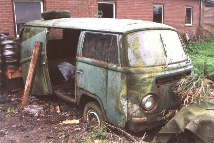

|  | General info
|
Then I asked the junkyardowner how much he wanted to have for the VW-logo and the windshield. "The windshield is fl 200,-", he didn't seem to be willing to sell the logo, actually I had the idea he didn't want to sell the van at all, so I gave up. We stood there for a little while, then the owner asked me if I had an idea when this car was built, I said "looking at the doorhandles and the dashboard in the bodywork colour I'd say it's a 1969 model", "No", he said, "it's from 1954". "WOW! This must be a really rare prototype!"
In September 2001 I was cruising the roads in the neighbourhood of Nijetrijne again for my work. I couldn't resist to go to Nijetrijne again. The van was still standing there. Perhaps it would be nice to pay the junkyard another visit.
A week later we were there again. Again we asked the man how much he wanted to have for his "1954" panelvan. He replied "600 guilders", we said "no way!". We offered him half of that amount which I thought was actually pretty much as well since there didn't seem to be a lot of items on the car that could still be used. He refused our generous offer. But he also said to us that he was going to clean the place up and was going to stop his junkyard business.
A few weeks later I was, again, in the neighbourhood for my work. Curious on the status of the junkyard I drove by Nijtrijne again. the junkyard was empty, except for a few cars and the 1969 panelvan! I called the junkyard owner to see if I could negotiate about the price. This was hard. He still wanted more than I offered. A second phonecall was needed to finish the negotiations and I became the proud owner of a 1969 Velvet green panelvan. Actually this is the T2 of my dreams: a Velvet green panelvan, too bad large vital pieces of metal had corroded into eternity. The only reason I bought this car is to save the useable parts from a certain shredded future.
While parting out the van we discovered how rusty this car actually was. The cabin doors on both sides had been almost split into two parts: an interior part and an outside bodywork part. The front of the car was corroded away on almost every corner: the windshieldrim, the cabindoor sides, around the headlamps and around the fresh air inlet. Also the chassis of the car was by far the most rusty T2-chassis I have ever seen. All the hallow-chassis beams had rustholes in them. There were a few surprises though:
To be continued...
More info on the M-plate: http://www.type2.com/m-codes/
|
| |||||||||||||||||||||||||||
| Last update: February 29th, 2004 Copyright © 2004 Vincent Molenaar molenari@hotmail.com |
DISCLAIMER |
Vincenzo's Volkswagen Vans
|
{kind=link}
{kind=link}
{kind=link}
{kind=link}
{kind=link}